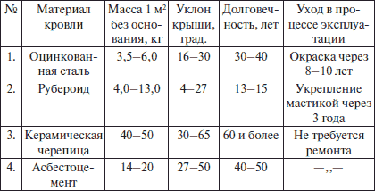

Основные термины.

Согласно Строительных Норм и Правил – 11-26-76 «Кровли» принято выделять следующие элементы: крыша– верхняя несущая и ограждающая конструкция здания, предохраняющая его от воздействия окружающей среды;
покрытие– верхнее ограждение здания для защиты помещений от внешних климатических факторов и воздействий. При наличии пространства (проходного или полупроходного) над перекрытием верхнего этажа покрытие именуется чердачным;
кровля– верхний элемент покрытия (кровельный ковер), предохраняющий здание от проникновения атмосферных осадков и механических воздействий;
основание под кровлю– поверхность теплоизоляции, несущих плит или стяжек, по которой наклеивают слой гидроизоляционного ковра (рулонного или мастичного). В кровлях из листовых материалов – (опоры для закрепления листов) прогоны и обрешетка. Если кровля имеет теплоизоляционное основание, она называется «теплой»;
основной водоизоляционный ковер(в составе рулонных и мастичных кровель) – слои из армированных мастик или рулонных материалов, выполняемые без усиления основного водоизоляционного ковра в ендовах, на карнизных участках, в местах примыкания к стенам, шахтам и другим конструктивным элементам;
защитный слой– элемент кровли, предохраняющий основной водоизоляционный ковер от механических повреждений, непосредственного воздействия атмосферных осадков, солнечной радиации и распространения огня на поверхности кровли;
По степени воздействия воды и атмосферных осадков принято выделять кровельные материалы, а также гидроизоляционные материалы.
Кровельные материалы предназначены для защиты от атмосферных осадков (дождь, снег, град), т. е. от кратковременного (периодического) воздействия осадков.
Гидроизоляционные материалы призваны защищать строительные конструкции от постоянного воздействия воды, чаще всего под давлением.
Кровельные материалы подразделяются по виду исходного сырья на:
• металлические (из стали, алюминия, меди и других металлов и их сплавов);
• керамические, получаемые обжигом глиняного сырья (черепица);
• цементно-волокнистые (асбестоцементные, стеклоцементные);
• пластмассовые (стекловолокнистый пластик, органическое стекло);
• цементно-песчаные (бетонные) черепицы;
• битумные (на основе битума, полимеров и их смесей).
По конфигурации кровельные материалы делятся на плоские, волнистые, пазогребневые и гребневые.
По форме – на рулонные (основные и безосновные), листовые, штучные изделия (панели, плиты) и мастичные.
Мастиками называются искусственные смеси органических вяжущих, в том числе битумов с тонкодисперсными минеральными или органическими наполнителями.
Для устройства защитного гидроизоляционного и пароизоляционного покрытия, грунтовок основания под покрытие рулонными и штучными кровельными материалами, применяются и эмульсии.
Эмульсии – это двухфазные дисперсные системы, в которых чаще всего дисперсной средой является вода, а дисперсной фазой – органические жидкости, в том числе битумы. Для уменьшения поверхностного натяжения на границе раздела двух фаз вводят эмульгаторы (мыла, концентраты, сульфито-спиртовый щелок и другие). Эмульсии готовятся в гомогенизаторах.
Выбор того или иного кровельного материала зависит от многих факторов: типа здания, конструкции несущих элементов крыши, традиций и климатических особенностей региона строительства, желания и финансовых возможностей заказчика.
Данные табл. 1говорят, что покрытия из рубероида недолговечны и сгораемы. Керамическая кровля имеет очень большую массу. Покрытия из оцинкованной стали характеризует небольшая масса, но они требуют регулярной покраски.
Таблица 1. Сравнительные характеристики показателей некоторых кровельных материалов
Кровли из листовой стали имеют гладкую поверхность, обеспечивающую хорошее стекание воды даже при небольших уклонах кровли, позволяют индустриализировать строительство предварительной механизированной заготовкой элементов покрытия, малую массу, позволяющую устраивать более легкие стропила и обрешетки. Гибкость кровельной стали позволяет выполнять крыши сложной формы. Кроме того такие кровли невоспламеняемы и их ремонт сводится к замене отдельных листов.
Можно отметить, что за последние годы появились новые кровельные материалы, такие как относительно дешевая полимерпесчаная и сверхплотная прокатная цементно-песчаная черепица и дорогие – черепица алюминиевая и металлочерепица, а также мягкие битумные самонаклеивающиеся плиты типа «Роки» и «Кепал», кровельные плитки «Plano Natur», «Plano Tema» и «Plano Nova», кровельные листы «Ондулин», битумно-латексная эмульсионная кровельная и гидроизоляционная мастика БЛЭМ-20 и мастика системы «Гекопрен». В ряде торговых залов, в зимний садах и оранжереях, в фонарях верхнего света промышленных зданий все чаще применяются светопрозрачные покрытия из акрилового, бикарбонатного стекла, стеклопластика, кварцевого (закаленного) стекла.
Анализ направления развития в производстве и применении кровельных материалов говорит об устойчивой динамике роста производства современных материалов типа цементно-песчаной черепицы, металлопластиковых кровельных листов «под черепицу». Изделия «мягкой кровли» типа изопласт, филиизол, рубимакс на основе стеклоткани, полиэстера и модифицированные битумы вытесняют традиционные рубероид, пергамин, толь. Особенность современного кровельного строительства в России – возврат к традиционно применявшимся ранее медным кровельным покрытиям.
По сравнению с широко применяемыми сегодня кровельными материалами на нефтебитуме (рубероиды, пергамины), современные материалы на модифицированном битуме служат в несколько раз дольше (20–30 лет без ремонта).
Изменилась и основа рулонных кровельных материалов (РКМ). На смену бумажному картону пришел стеклохолст – стеклоткань или полиэстер (в ряде случаев упроченный стеклотканью). Такие материалы имеют значительно большую массу, чем традиционные (3–6 кг/м против 1–2 кг/м ).
Стоимость современных кровельных материалов, изготовленных с применением высококачественных компонентов, растет. Однако, увеличивается и срок службы кровли. Вместо нескольких слоев традиционных материалов кладется один (максимум два) слоя. В результате сокращаются трудозатраты, а увеличение значительных первоначальных затрат на покупку материалов наплавляемой мягкой кровли окупаются за счет длительной безремонтной эксплуатации.